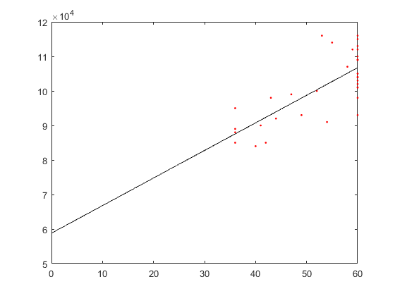

Exam 2
Kimia Vahdat 200262784
Contents
- Question 1
- Reading data
- Create MILP model
- Display contraint matrix
- Solve using Gurobi
- Report results
- Question 2- First Approach
- Get road network
- Label type of road
- Plot roads
- Add connector roads from cities to road network
- Convert road distances to travel times (needs to be after ADDCONNECTOR)
- Shortest time routes
- Distance of shortest time route
- Adding constraint
- Construct & improve routes:
- Add any single-shipment routes
- Plot Routes
- Route time, packages, distance
- Display route output structure
- Gant chart
- Question 2-Second Approach
- Adding constraint
- Construct & improve routes:
- Add any single-shipment routes
- Plot Routes
- Route time, packages, distance
- Display route output structure
- Gant chart
Question 1
Reading data
fn='Exam2DataS19.xlsx'; Prod = table2struct(readtable(fn,'sheet','P1-Data')); % need to fit regression model to get fixed cost and variable cost of % production x = [Prod.Production]'; % ton/week y = [Prod.Costs]'*1000; % $/week yest = @(x,p) p(1) + p(2)*x; fh = @(p) sum((y - yest(x,p)).^2); ab = fminsearch(fh,[0 1]) k = ab(1) % fixed cost of production (only happens if we have production in a period) Cp = ab(2) % variable cost of production plot(x,y,'r.') hold on, fplot(@(x) yest(x,ab),[0 max(x)],'k-'), hold off Dem=table2struct(readtable(fn,'sheet','P1-Demand')); D=[Dem.Demand]'; % demand ton/week h = 0.05/(12*4)+0.06/(12*4)+0.5/4; Ci = cumsum(Cp,1)*h; % inventory cost of product 1 for stage 1 ($/ton) K=60; % Production capacity ton/week yinit = 13; % initial inventory (ton) ycap=120; % incentory capacity yfinal = 13; % final inventory (ton) T=13; % number of periods
ab =
1.0e+04 *
5.8812 0.0798
k =
5.8812e+04
Cp =
798.4160
 Create MILP model
Cp = reshape(repmat(Cp,[T 1]),1,T) % create 1 x T array Ci = reshape(repmat(Ci,[T+1 1]),1,T+1) % create 1 x (T+1) array Ci(:,1) = 0 % intital inventory cost already accounted for last period k = reshape(repmat(k,[T 1]),1,T) % create 1 x T array mp = Milp('PPlan'); mp.addobj('min',Cp,Ci,k) for t = 1:T mp.addcstr({t},{[1 -1],{[t t+1]}},0,'=',D(t)) mp.addcstr({t},0,'<=',{K,{t}}) end mp.addlb(0,horzcat(yinit,zeros(1,T-1),yfinal),0) mp.addub(Inf,horzcat(yinit,repmat(ycap,1,T-1),yfinal),1) mp.addctype('C','C','B')
Cp =
Columns 1 through 7
798.4160 798.4160 798.4160 798.4160 798.4160 798.4160 798.4160
Columns 8 through 13
798.4160 798.4160 798.4160 798.4160 798.4160 798.4160
Ci =
Columns 1 through 7
101.6317 101.6317 101.6317 101.6317 101.6317 101.6317 101.6317
Columns 8 through 14
101.6317 101.6317 101.6317 101.6317 101.6317 101.6317 101.6317
Ci =
Columns 1 through 7
0 101.6317 101.6317 101.6317 101.6317 101.6317 101.6317
Columns 8 through 14
101.6317 101.6317 101.6317 101.6317 101.6317 101.6317 101.6317
k =
1.0e+04 *
Columns 1 through 7
5.8812 5.8812 5.8812 5.8812 5.8812 5.8812 5.8812
Columns 8 through 13
5.8812 5.8812 5.8812 5.8812 5.8812 5.8812
Display contraint matrix
spy(mp.Model.A),shg
Solve using Gurobi
clear params
model = mp.milp2gb
params.outputflag = 1;
result = gurobi(model, params);
x = mp.namesolution(result.x)
TC = result.objval
model =
struct with fields:
name: 'PPlan'
modelsense: 'minimize'
obj: [40×1 double]
lb: [40×1 double]
ub: [40×1 double]
vtype: 'CCCCCCCCCCCCCCCCCCCCCCCCCCCBBBBBBBBBBBBB'
A: [26×40 double]
sense: [26×1 char]
rhs: [26×1 double]
Optimize a model with 26 rows, 40 columns and 65 nonzeros
Variable types: 27 continuous, 13 integer (13 binary)
Coefficient statistics:
Matrix range [1e+00, 6e+01]
Objective range [1e-08, 6e+04]
Bounds range [1e+00, 1e+02]
RHS range [3e+01, 5e+01]
Found heuristic solution: objective 1208014.9758
Presolve removed 5 rows and 9 columns
Presolve time: 0.00s
Presolved: 21 rows, 31 columns, 51 nonzeros
Variable types: 21 continuous, 10 integer (10 binary)
Root relaxation: objective 9.956716e+05, 26 iterations, 0.00 seconds
Nodes | Current Node | Objective Bounds | Work
Expl Unexpl | Obj Depth IntInf | Incumbent BestBd Gap | It/Node Time
0 0 995671.600 0 8 1208014.98 995671.600 17.6% - 0s
H 0 0 1159365.8430 995671.600 14.1% - 0s
H 0 0 1050684.8270 995671.600 5.24% - 0s
H 0 0 1047940.7711 995671.600 4.99% - 0s
0 0 1009380.28 0 7 1047940.77 1009380.28 3.68% - 0s
0 0 1013558.78 0 2 1047940.77 1013558.78 3.28% - 0s
0 0 1013558.78 0 2 1047940.77 1013558.78 3.28% - 0s
0 0 1017384.67 0 1 1047940.77 1017384.67 2.92% - 0s
0 0 1017384.67 0 4 1047940.77 1017384.67 2.92% - 0s
0 2 1017384.67 0 4 1047940.77 1017384.67 2.92% - 0s
* 77 0 6 1047534.2443 1042960.82 0.44% 1.8 0s
Cutting planes:
Cover: 2
Implied bound: 1
Clique: 1
MIR: 2
Flow cover: 6
Flow path: 1
Explored 79 nodes (184 simplex iterations) in 0.03 seconds
Thread count was 8 (of 8 available processors)
Solution count 5: 1.04753e+06 1.04794e+06 1.05068e+06 ... 1.20801e+06
Optimal solution found (tolerance 1.00e-04)
Best objective 1.047534244255e+06, best bound 1.047534244255e+06, gap 0.0000%
x =
struct with fields:
Cp: [38 53 43.0000 60 60 0 60 0 60 60 0 59 60]
Ci: [13 0 0 1.0000 16.0000 27 2.0000 37 6 18 50 0 6 13]
k: [1 1 1 1 1 0 1 0 1 1 0 1 1]
TC =
1.0475e+06
Report results
Fp = x.Cp; mdisp(Fp) Fi = x.Ci; mdisp(Fi) Fk= x.k; mdisp(Fk) D=D'; mdisp(D)
Fp: 1 2 3 4 5 6 7 8 9 10 11 12 13 --:---------------------------------------------------- 1: 38 53 43 60 60 0 60 0 60 60 0 59 60 Fi: 1 2 3 4 5 6 7 8 9 10 11 12 13 14 --:-------------------------------------------------------- 1: 13 0 0 1 16 27 2 37 6 18 50 0 6 13 Fk: 1 2 3 4 5 6 7 8 9 10 11 12 13 --:---------------------------------------------------- 1: 1 1 1 1 1 0 1 -0 1 1 -0 1 1 D: 1 2 3 4 5 6 7 8 9 10 11 12 13 -:---------------------------------------------------- 1: 51 53 42 45 49 25 25 31 48 28 50 53 53
Question 2- First Approach
clear all close all fn='Exam2DataS19.xlsx'; DC= table2struct(readtable(fn,'sheet','P2-DC')); Cust=table2struct(readtable(fn,'sheet','P2-Customers')); DC_XY=[DC.Lon,DC.Lat]; C_XY=[Cust.Lon; Cust.Lat]'; q=[Cust.Pkg]; XY=[DC_XY;C_XY]; b=1; e=[2:size(XY,1)]; tr=struct('b',b,'e',b,'Kwt',40); sh = vec2struct('b',b,'e',e,'q',q,'tU',2/60); sdisp(sh)
sh: b e q tU --:------------------ 1: 1 2 3 0.0333 2: 1 3 3 0.0333 3: 1 4 3 0.0333 4: 1 5 2 0.0333 5: 1 6 2 0.0333 6: 1 7 2 0.0333 7: 1 8 1 0.0333 8: 1 9 2 0.0333 9: 1 10 2 0.0333 10: 1 11 2 0.0333 11: 1 12 1 0.0333 12: 1 13 2 0.0333 13: 1 14 2 0.0333 14: 1 15 1 0.0333 15: 1 16 2 0.0333 16: 1 17 2 0.0333 17: 1 18 3 0.0333 18: 1 19 1 0.0333 19: 1 20 1 0.0333 20: 1 21 1 0.0333 21: 1 22 3 0.0333 22: 1 23 3 0.0333 23: 1 24 1 0.0333 24: 1 25 5 0.0333 25: 1 26 2 0.0333 26: 1 27 3 0.0333 27: 1 28 2 0.0333 28: 1 29 5 0.0333 29: 1 30 2 0.0333 30: 1 31 1 0.0333 31: 1 32 2 0.0333 32: 1 33 1 0.0333 33: 1 34 1 0.0333 34: 1 35 1 0.0333 35: 1 36 1 0.0333 36: 1 37 2 0.0333 37: 1 38 1 0.0333 38: 1 39 1 0.0333 39: 1 40 3 0.0333 40: 1 41 2 0.0333 41: 1 42 2 0.0333 42: 1 43 2 0.0333 43: 1 44 3 0.0333 44: 1 45 2 0.0333 45: 1 46 2 0.0333 46: 1 47 1 0.0333 47: 1 48 3 0.0333 48: 1 49 2 0.0333 49: 1 50 1 0.0333 50: 1 51 1 0.0333
Get road network
expansionAroundXY = 0.1; [XY2,IJD,isXY,isIJD] = subgraph(usrdnode('XY'),... isinrect(usrdnode('XY'),boundrect(XY,expansionAroundXY)),... usrdlink('IJD'));
Label type of road
s = usrdlink(isIJD); isI = s.Type == 'I'; % Interstate highways isIR = isI & s.Urban == ' '; % Rural Interstate highways isIU = isI & ~isIR; % Urban Interstate highways isR = s.Urban == ' ' & ~isI; % Rural non-Interstate roads isU = ~isI & ~isR; % Urban non-Interstate roads
Plot roads
makemap(XY2,0.03) % 3% expansion h = []; % Keep handle to each plot for legend h = [h pplot(IJD(isR,:),XY2,'r-','DisplayName','Rural Roads')]; h = [h pplot(IJD(isU,:),XY2,'k-','DisplayName','Urban Roads')]; h = [h pplot(IJD(isI,:),XY2,'c-','DisplayName','Interstate Roads')];
Add connector roads from cities to road network
[IJD11,IJD12,IJD22] = addconnector(XY,XY2,IJD); h = [h pplot(IJD12,[XY; XY2],'b-','DisplayName','Connector Roads')]; h = [h pplot(XY,'g.','DisplayName','Cities')];
Convert road distances to travel times (needs to be after ADDCONNECTOR)
v.IR = 75; % Rural Interstate highways average speed (mph) v.IU = 65; % Urban Interstate highways average speed (mph) v.R = 50; % Rural non-Interstate roads average speed (mph) v.U = 25; % Urban non-Interstate roads average speed (mph) v.C = 20; % Facility to road connector average speed (mph) IJT = IJD; IJT(isIR,3) = IJD(isIR,3)/v.IR; IJT(isIU,3) = IJD(isIU,3)/v.IU; IJT(isR,3) = IJD(isR,3)/v.R; IJT(isU,3) = IJD(isU,3)/v.U; IJT22 = IJD22; % road to road IJT22(:,3) = IJT(:,3); IJT12 = IJD12; % facility to road IJT12(:,3) = IJD12(:,3)/v.C; % (IJD11 facility to facility arcs ignored)
Shortest time routes
n = size(XY,1); [T,P] = dijk(list2adj([IJT12; IJT22]),1:n,1:n);
Distance of shortest time route
W = list2adj([IJD12; IJD22]); D = zeros(n); for i = 1:n for j = 1:n D(i,j) = locTC(pred2path(P,i,j),W); end end
Adding constraint
defined a new function myrteTC
maxdist = 200;
Construct & improve routes:
rTDh = @(rte) myrteTC(rte,sh,tr,maxdist,T,D); ph = @(rte) plotshmt(sh,XY,rte,tr); IJS = pairwisesavings(rTDh,sh); r = twoopt(savings(rTDh,sh,IJS,true),rTDh,true);
SAVINGS: 3.825518: Make Rte 1 using 11 and 25 6.828794: Make Rte 2 using 39 and 42 7.310591: Add 17 to Rte 2 7.525103: Add 44 to Rte 2 10.305727: Make Rte 3 using 2 and 21 10.597899: Add 3 to Rte 2 11.028536: Add 9 to Rte 3 12.831425: Make Rte 4 using 16 and 23 13.125143: Add 18 to Rte 2 12.324844: Combine Rte 4 to Rte 3 12.758909: Add 41 to Rte 3 14.715519: Make Rte 5 using 7 and 24 14.876130: Add 27 to Rte 5 16.320763: Make Rte 6 using 14 and 34 15.074701: Combine Rte 5 to Rte 3 15.289915: Add 28 to Rte 2 17.599604: Make Rte 7 using 6 and 46 19.075542: Make Rte 8 using 8 and 33 19.353993: Add 36 to Rte 7 20.103558: Add 4 to Rte 7 19.349629: Combine Rte 6 to Rte 7 20.755487: Make Rte 9 using 38 and 43 21.354348: Add 40 to Rte 7 23.085243: Make Rte 10 using 1 and 19 23.262373: Add 22 to Rte 10 24.624611: Make Rte 11 using 30 and 45 26.266909: Make Rte 12 using 5 and 50 27.270491: Make Rte 13 using 12 and 47 27.496896: Add 10 to Rte 13 27.749640: Add 29 to Rte 9 28.048053: Add 26 to Rte 8 27.093033: Combine Rte 8 to Rte 1 27.372507: Add 13 to Rte 12 26.779998: Combine Rte 11 to Rte 13 27.108299: Add 48 to Rte 1 27.548529: Add 49 to Rte 10 27.039390: Combine Rte 10 to Rte 12 27.200678: Add 35 to Rte 12 26.701115: Combine Rte 13 to Rte 9 27.024325: Add 37 to Rte 9 27.320106: Add 31 to Rte 9 27.646747: Add 32 to Rte 9 27.805019: Add 15 to Rte 12 28.024400: Add 20 to Rte 12 TWOOPT: 28.024400: 1: 48 11 25 26 33 8 33 25 11 8 26 48 28.024400: 2: 28 18 3 44 17 39 42 42 39 17 3 44 18 28 27.923375: 2: 28 18 3 44 17 39 42 3 17 39 42 44 18 28 27.919375: 2: 28 18 3 44 17 39 42 44 42 39 17 3 18 28 27.913394: 2: 28 18 3 44 17 39 42 18 3 17 39 42 44 28 27.913394: 3: 7 24 27 41 16 23 9 2 21 2 41 16 23 21 9 7 24 27 27.829836: 3: 7 24 27 41 16 23 9 2 21 23 16 41 2 21 9 7 24 27 27.177685: 3: 7 24 27 41 16 23 9 21 2 41 16 23 21 2 9 7 24 27 27.177685: 4: 40 14 34 4 36 6 46 6 14 34 40 4 46 36 27.116160: 4: 36 46 4 40 34 14 6 46 6 36 4 34 14 40 26.975545: 4: 36 46 4 40 34 14 6 6 46 36 4 34 14 40 26.677596: 4: 36 46 4 40 34 14 6 36 46 6 4 34 14 40 26.677596: 5: 32 31 37 38 43 29 30 45 10 12 47 12 47 10 32 30 45 38 43 29 37 31 26.486925: 5: 32 31 37 38 43 29 30 45 10 12 47 32 10 47 12 30 45 38 43 29 37 31 26.486925: 6: 20 15 35 50 5 13 49 22 1 19 1 19 22 35 13 50 5 49 15 20 26.429580: 6: 20 15 35 50 5 13 49 22 19 1 19 1 22 35 13 50 5 49 15 20 26.315734: 6: 20 15 35 50 5 13 49 22 19 1 35 22 1 19 13 50 5 49 15 20 26.305588: 6: 20 15 35 50 5 13 49 22 19 1 15 49 5 50 13 19 1 22 35 20 26.305588: 6: 20 15 35 50 5 13 49 22 19 1 20 35 22 1 19 13 50 5 49 15 26.220541: 6: 20 15 35 50 5 13 49 22 19 1 20 35 22 1 19 49 5 50 13 15 26.169772: 6: 20 15 35 50 5 13 49 22 19 1 20 35 22 1 19 49 13 50 5 15 26.169772: 6: 20 15 35 50 5 13 49 22 19 1 15 5 50 13 49 19 1 22 35 20 26.154661: 6: 20 15 35 50 5 13 49 22 19 1 15 50 5 13 49 19 1 22 35 20 26.154661: 6: 20 15 35 50 5 13 49 22 19 1 20 35 22 1 19 49 13 5 50 15
Add any single-shipment routes
[r,~,Time] = sh2rte(sh,r,rTDh);
Plot Routes
plotshmt(sh,XY,r,tr)
pplot(XY(1,:),'ks')
Route time, packages, distance
wt = [sh.q];
Pkg = cellfun(@(r)sum(wt(rte2idx(r))),r);
distance = rteTC(r,sh,D,tr);
vdisp('Time,Pkg,distance')
: Time Pkg distance -:--------------------- 1: 4.97 11 198.92 2: 4.39 19 188.94 3: 4.78 21 171.95 4: 4.13 11 159.76 5: 3.91 20 115.46 6: 3.97 17 107.66
Display route output structure
to get time windows output too I added the time constraint here to tr
tr=vec2struct(tr,'tbmin',8,'tbmax',17,'temin',8,'temax',17); [TC,Xflg,out] = rteTC(r,sh,T,tr);
Gant chart
b = arrayfun(@(x) (x.Start(1)),out); b = b(:); e = arrayfun(@(x) (x.Depart(end)),out); e = e(:); combine=[0,0]; for j=1:(length(r)-1) for i=j+1:length(r) if(Time(i)+Time(j)+1<=9) combine=[combine;[j,i]]; end end end combine % we can combine only rout 5 and 6 % creating new beginning and end time b(6)=e(5)+1; e(6)=b(6)+Time(6); % therefore we need 5 vans mdisp([b e]) figure gantt([b e]) routeNum=[1:5 5]'; vdisp('Time,Pkg,distance,b,e,routeNum')
combine =
0 0
5 6
: 1 2
-:--------------
1: 8.00 12.97
2: 8.00 12.39
3: 8.00 12.78
4: 8.00 12.13
5: 8.00 11.91
6: 12.91 16.88
: Time Pkg distance b e routeNum
-:---------------------------------------------
1: 4.97 11 198.92 8.00 12.97 1
2: 4.39 19 188.94 8.00 12.39 2
3: 4.78 21 171.95 8.00 12.78 3
4: 4.13 11 159.76 8.00 12.13 4
5: 3.91 20 115.46 8.00 11.91 5
6: 3.97 17 107.66 12.91 16.88 5
Question 2-Second Approach
Adding constraint
defined a new function myrteTC2
XY=[DC_XY;C_XY]; b=1; e=[2:size(XY,1)]; tr=struct('b',b,'e',b,'Kwt',40); sh = vec2struct('b',b,'e',e,'q',q,'tU',2/60); maxdist = 200;
Construct & improve routes:
rTDh = @(rte) myrteTC2(rte,sh,tr,maxdist,T,D); ph = @(rte) plotshmt(sh,XY,rte,tr); IJS = pairwisesavings(rTDh,sh); r = twoopt(savings(rTDh,sh,IJS,true),rTDh,true);
SAVINGS: 3.825518: Make Rte 1 using 11 and 25 6.828794: Make Rte 2 using 39 and 42 7.310591: Add 17 to Rte 2 7.525103: Add 44 to Rte 2 10.305727: Make Rte 3 using 2 and 21 10.597899: Add 3 to Rte 2 11.028536: Add 9 to Rte 3 12.831425: Make Rte 4 using 16 and 23 14.788036: Make Rte 5 using 7 and 24 14.948647: Add 27 to Rte 5 16.393279: Make Rte 6 using 14 and 34 16.845372: Add 41 to Rte 4 19.155061: Make Rte 7 using 6 and 46 21.039271: Make Rte 8 using 18 and 28 19.946175: Combine Rte 8 to Rte 6 21.422114: Make Rte 9 using 8 and 33 21.700565: Add 36 to Rte 7 22.119280: Add 50 to Rte 5 21.490390: Combine Rte 9 to Rte 5 22.239955: Add 4 to Rte 7 23.645814: Make Rte 10 using 38 and 43 22.740264: Combine Rte 10 to Rte 7 24.471159: Make Rte 11 using 1 and 19 24.648289: Add 22 to Rte 11 24.935694: Add 5 to Rte 3 26.297933: Make Rte 12 using 30 and 45 25.577731: Combine Rte 12 to Rte 6 26.119140: Add 40 to Rte 6 27.122722: Make Rte 13 using 12 and 47 27.506390: Add 26 to Rte 5 27.732795: Add 10 to Rte 13 26.993088: Combine Rte 11 to Rte 4 27.257450: Add 13 to Rte 3 27.637242: Add 49 to Rte 4 28.899139: Make Rte 14 using 29 and 48 29.001350: Add 35 to Rte 4 29.324560: Add 37 to Rte 14 29.620341: Add 31 to Rte 14 29.973559: Add 32 to Rte 6 29.874273: Combine Rte 14 to Rte 13 30.032545: Add 15 to Rte 3 30.241780: Add 20 to Rte 6 TWOOPT: 30.241780: 1: 25 11 25 11 30.241780: 2: 3 44 17 39 42 42 39 17 3 44 30.140754: 2: 3 44 17 39 42 3 17 39 42 44 30.140754: 3: 15 13 5 9 2 21 2 21 9 5 13 15 29.988781: 3: 15 13 5 9 21 2 21 2 9 5 13 15 29.901760: 3: 15 13 5 9 21 2 9 2 21 5 13 15 29.901760: 4: 35 49 19 1 22 41 23 16 23 16 41 49 19 1 22 35 29.859760: 4: 35 49 19 1 22 41 16 23 16 23 41 49 19 1 22 35 29.743268: 4: 35 49 19 1 22 41 16 23 49 41 23 16 19 1 22 35 29.743268: 4: 35 49 19 1 22 41 16 23 35 22 1 19 16 23 41 49 29.743268: 5: 26 8 33 50 27 24 7 24 7 8 33 26 27 50 29.731836: 5: 50 27 26 33 8 7 24 7 24 27 50 33 8 26 29.304482: 5: 50 27 26 33 8 7 24 50 27 24 7 33 8 26 29.205294: 5: 50 27 26 33 8 7 24 50 27 24 7 8 33 26 29.205294: 6: 20 32 40 30 45 14 34 28 18 28 18 14 34 30 45 40 32 20 29.014840: 6: 20 32 40 30 45 14 34 28 18 40 45 30 34 14 18 28 32 20 29.014840: 7: 38 43 4 36 6 46 6 4 46 36 38 43 28.783874: 7: 38 43 4 36 6 46 4 6 46 36 38 43 28.783874: 8: 47 12 10 31 37 48 29 48 29 37 31 12 47 10
Add any single-shipment routes
[r,~,Time] = sh2rte(sh,r,rTDh);
Plot Routes
plotshmt(sh,XY,r,tr)
pplot(XY(1,:),'ks')
Route time, packages, distance
wt = [sh.q];
Pkg = cellfun(@(r)sum(wt(rte2idx(r))),r);
distance = rteTC(r,sh,D,tr);
vdisp('Time,Pkg,distance')
: Time Pkg distance -:--------------------- 1: 3.83 3 199.98 2: 3.89 13 183.97 3: 3.68 14 125.99 4: 3.75 14 132.81 5: 3.23 15 105.20 6: 3.79 15 131.66 7: 3.61 11 139.42 8: 3.01 14 103.00
Display route output structure
to get time windows output too I added the time constraint here to tr
tr=vec2struct(tr,'tbmin',8,'tbmax',17,'temin',8,'temax',17); [TC,Xflg,out] = rteTC(r,sh,T,tr);
Gant chart
b = arrayfun(@(x) (x.Start(1)),out); b = b(:); e = arrayfun(@(x) (x.Depart(end)),out); e = e(:); % we can combine each combination of 2 routes together % creating new beginning and end time for each coupled routes i=1; while i<length(r) b(i+1)=e(i)+1; e(i+1)=b(i+1)+Time(i+1); i=i+2; end mdisp([b e]) figure gantt([b e]) routeNum=[1 1 2 2 3 3 4 4]'; % final result vdisp('Time,Pkg,distance,b,e,routeNum')
: 1 2 -:-------------- 1: 8.00 11.83 2: 12.83 16.72 3: 8.00 11.68 4: 12.68 16.43 5: 8.00 11.23 6: 12.23 16.02 7: 8.00 11.61 8: 12.61 15.62 : Time Pkg distance b e routeNum -:--------------------------------------------- 1: 3.83 3 199.98 8.00 11.83 1 2: 3.89 13 183.97 12.83 16.72 1 3: 3.68 14 125.99 8.00 11.68 2 4: 3.75 14 132.81 12.68 16.43 2 5: 3.23 15 105.20 8.00 11.23 3 6: 3.79 15 131.66 12.23 16.02 3 7: 3.61 11 139.42 8.00 11.61 4 8: 3.01 14 103.00 12.61 15.62 4